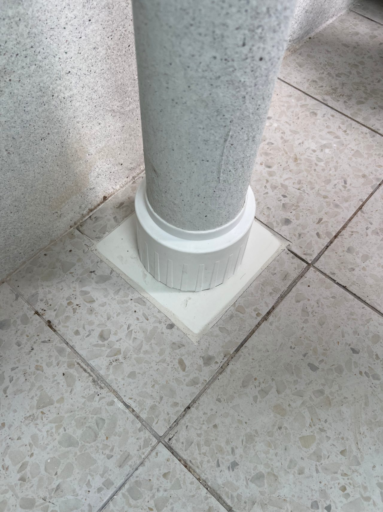

인테리어 하자보증 기간, 공정별로 이렇게 다릅니다

방수는 2년, 도배·타일 같은 마감은 1년 — 만물인테리어가 계약서에 명시하는 공정별 하자보증 기간과, 하자가 생겼을 때 순서를 정리했습니다.
가장 중요한 한 가지
법에서 정한 최소 기간과 별개로, 실제로 보장받는 기간은 '계약서에 적힌 기간'입니다. 하자보증은 말로 하는 약속이 아니라 계약서에 공정별로 명시되어야 효력이 있습니다. 저희는 견적·계약 단계에서 보증기간을 문서로 남깁니다.
공정별 보증기간 (만물인테리어 기준)
건설산업기본법 하자담보책임기간을 근거로 방수는 2년, 그 외 마감은 1년입니다. 방수 2년(욕실·발코니 누수) · 도배·벽지 1년(들뜸·이음새) · 도장 1년(갈라짐·변색) · 타일 1년(크랙·줄눈) · 창호·유리 1년(결로·개폐 불량) · 목공·가구 1년(문짝 처짐) · 전기 설비 1년(스위치·조명). 큰 흐름은 '물이 새는 문제는 2년, 그 외 마감은 1년'입니다. 급배수·냉난방 같은 설비류는 부위와 계약에 따라 다르니 계약서에서 꼭 확인하세요.
하자가 생겼을 때 이 순서로
① 사진·영상으로 즉시 기록(날짜가 남게) ② 시공 업체에 먼저 연락 — 보증기간 내면 대부분 무상보수 ③ 계약서·견적서·대화 기록 보관 ④ 연락이 안 되면 한국소비자원·지자체 건축 부서 상담. 분쟁에서 가장 강력한 자료는 사진이 아니라 계약서와 기록입니다.
업체 고를 때 체크포인트
계약서에 공정별 보증기간이 숫자로 적혀 있는가, 공사 후에도 연락이 닿는 구조인가(대표가 직접 관리하는지), 실내건축 관련 면허·사업자가 있는가, A/S 접수 창구가 명확한가 — 이 네 가지만 확인해도 하자 분쟁의 대부분을 예방할 수 있습니다.